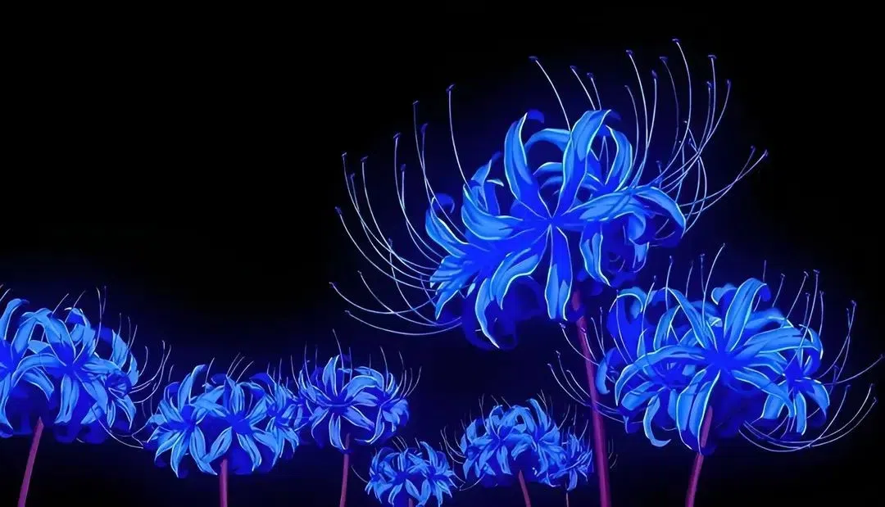

I wonder if anyone actually reads these blog posts, or if I am just screaming into the void. Who knows, maybe someone in 100 years will look back at the internet and come across it... It'd be nice to know that my thoughts are not alone, nor am I truly 'mad' as certain people will exclaim. Oh the many things I want to pour into this blog. But I know I will become ridiculed and an easy target for some... Maybe the thing I'm learning is to live for myself instead of for others, maybe that's why people always betray and abandon me, not out of malice, but out of living for ones-self. Who knows, I'm certainly no human guru. If not malice, why did those people choose malice apparent actions towards me and me alone as if I was to blame for all of their issues, or soley the... What is the word I'm looking for... I don't know but within my whole life, no matter how nice or kind I've chosen to be, people would view me as some less than human thing. Even if I masked myself online, they would slowly come to that conclusion about me for a reason I cannot fathom. 2017, A. suddenly broke contact -> bpd episode. 2019 E removed me after my wreck due to being too 'unstable' or 'less than human for her. 2019 my old friends from 2016-2017 would turn on my with exclamations of me being Stupid, Autistic, Boring, and the like. I just wanted a friend. 2020 I made new friends online, but that didn't last long due to my sporadic unhealed nature at the time. At least I met some cool people in 2020, two of whom I became friends with for a couple years.. S got my brothers number, after that she started hating me. M started hating me for my episodic nature, and chose herself first. 2021, VB, I thought I was through the roaring 20s... But no, they decided to get close to me as a test for their supposed "Villain Arc"... Oh how the modern human is cruel. Every single mask has failed me. My political masks, my religious masks, my personality masks. They all failed. I tried a last ditch effort for SC and M and E by letting them get to know the person under the mask, but the effect was just me getting ghosted. Why? Was I too nice? Too kind? Too nerdy? Was I not enough? Vultures. All of them. I miss you A. Truly. You were the last person I was actually close with, back in 2017. Oh how it's been so long. I wish I could go back and be less socially anxious. Maybe I'm just fantasizing about the past again as an escape... I know you too, do not like me. No one does. I am merely a game, a pawn, food, or competition to the modern human psyche, for merely existing. I don't even need saving, I just need some light in this pitch-black world of ours. The same patterns of actions toward me started from when I was 6 years old, yet I am greeted with them at every turn in my 20s and beyond, never-ending. For what? What have I done that was so Egregious!? I am anti-social, I don't like talking to people. I avoid conflict, people, groups, cliques, gangs, drugs, money, competition, everything. I even avoid sex. But yet, the malice towards me remains. I do not understand it. I long for that light.
